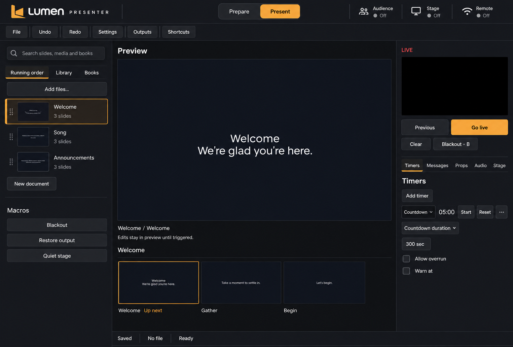
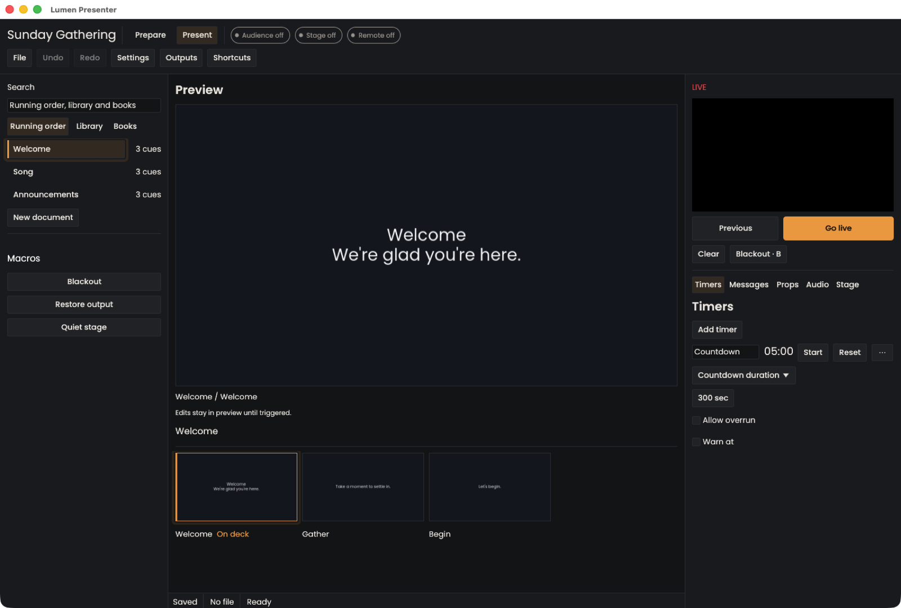
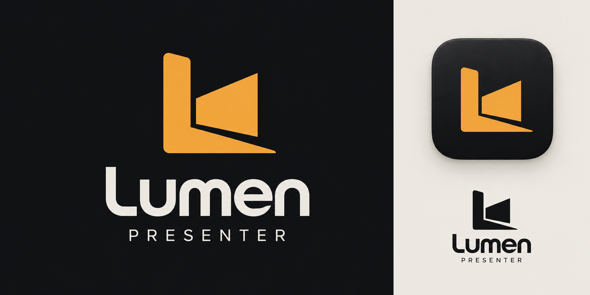

Lumen Presenter / design handoff
The current app layout stays authoritative. Change the brand/title slot and icon; preserve all controls. This page proves the supplied vector and raster assets. It is not an application screenshot.
Claude prompt · Integration specification · Tokens
Actual-size header asset · 188 × 28 logical points
Local header fragment — controls remain in their existing sequence│PreparePresent│Audience offStage offRemote off
Responsive reductions
Full: 188 × 28LumenCompact: mark + native nameMinimum: mark only
Small-size silhouette proof
16 px
24 px
28 px
32 px
128 px
Dark and light applications
macOS icon
Existing palette
Saffron #F2A33ACanvas #121316Panel #1A1C20Text #ECE8E1
Revised generated direction
Use only for the brand idea. The larger logo, moved mode switch, changed panel proportions and control styling are not implementation instructions.

Historical native console reference
From the repository's release captures. Inspect the current native app and retain any newer features.

Original identity concept

Production SVGs are a normalized two-path redraw; lettering is outlined from bundled OFL Poppins. No application code was changed.